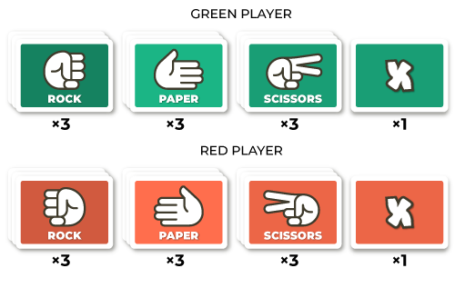
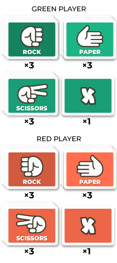

How to play
Now We Flip is the "Memory" game meets the "Rock, Paper, Scissors".
Each player has 10 cards:
 Cards are randomly placed face-down. Players take turns, flipping face-up 2 cards at the time, trying to find matching pairs and eliminating other player’s cards in a “Rock, Paper, Scissors” style match.
The matching pair is 2 cards that meet the following conditions:
- Cards are in different colours (red and green).
- Cards have different symbols (ex. Rock and Paper).
- None of the cards is an X card.


2 cards that don’t meet the above conditions is called a neutral pair.
Flipping the matching card pair makes the 2 cards battle and the winning card is determined according to the “Rock, Paper, Scissors” rules (Rock beats Scissors, Scissors beat Paper, Paper beats Rock). The winning card stays in the game, the loosing card is removed. In case of neutral card pair there is a draw and both cards stay in the game.
When an active player flips a matching pair of cards and their card is the loosing card - that card is still removed from the game. Therefore players need to be careful on their turns, not to draw a loosing pair. On their turn players can flip only 2 cards. Player’s turn does not continue after successfully finding a winning pair.
The player panel helps to keep track of the cards lost by each player.
There are two X cards in the game, one in each player’s colour.
A player’s X card gets activated once the 3rd card in one suit is lost. The X card becomes then an extra (4th) card in that suit and it’s marked with a little ‘x’ beside it, to indicate that this is a converted X card. The converted X card behaves like the card of the suit it has been converted to, so for ex. if it is a Rock, it defeats the Scissors and loses to Paper.
The purpose of the converted X card is to be a neutral card early in the game (creating accidental or deliberate draws), and when converted - to give a player, who lost their full suit of cards too early in the game, an extra opportunity to continue battling with that suit.
The objective of the game is to remove 2 full suits of cards of the opponent. The first player to do it wins the game.